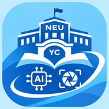
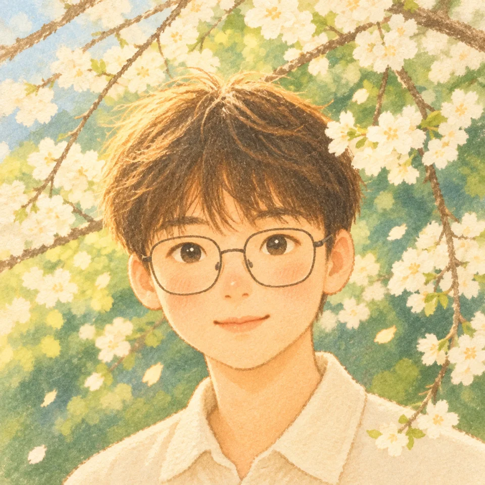
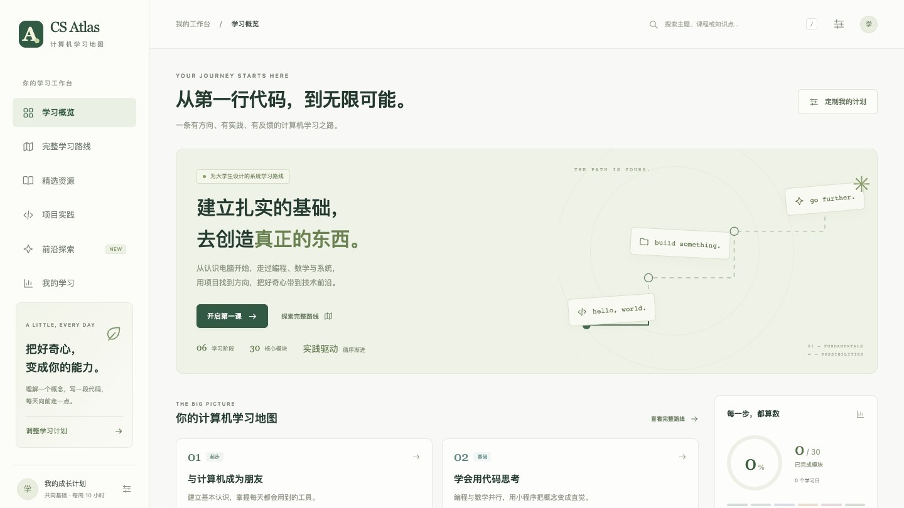

镜头模拟
镜头模拟
CamLensSim
在同一个三维场景里调整焦距、光圈和对焦距离，看看视角会怎么变、背景会虚到什么程度。

CanoeChen
拍照是我最喜欢做的事。
拍得最多的是猫、鸟和花草。路上遇到好看的光，也会停下来拍几张。
代码也在写，平时会留意 AI 的新进展。
小学的信息技术课上，老师带着我们用 Scratch 写程序。那是我第一次接触编程。
重庆市青少年创意编程决赛一等奖初中时做过一阵信息学竞赛题，后来因为学业紧张，暂时放下了。
遇到麻烦时，常会自己写个小工具解决。做出来的东西里，有几个放在了这个站上。
点中间的照片看大图，点两侧的预览或左右滑动可以换照片。自动播放时每张约 3 秒。
想把拍过的照片和做过的项目收在一处，于是搭了这个站。
镜头模拟
在同一个三维场景里调整焦距、光圈和对焦距离，看看视角会怎么变、背景会虚到什么程度。

计算机学习路线把计算机课程按学习阶段排成一条路线，每段配好资料、练习和自测，也记下自己学到哪里。
 做题和复习
做题和复习
按章节做题，找出还没掌握的地方，过几天再回头复习；要查资料时，也能在站里翻到。
想聊摄影，或者对项目有建议，欢迎给我发邮件。